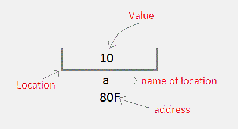
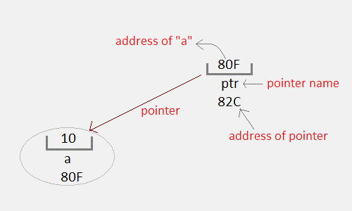

Introduction to Pointers
A Pointer in C language is a variable which holds the address of another variable of same data type.
Pointers are used to access memory and manipulate the address.
Pointers are one of the most distinct and exciting features of C language. It provides power and flexibility to the language. Although pointers may appear a little confusing and complicated in the beginning, but trust me, once you understand the concept, you will be able to do so much more with C language.
Before we start understanding what pointers are and what they can do, let's start by understanding what does "Address of a memory location" means?
Address in C
Whenever a variable is defined in C language, a memory location is assigned for it, in which it's value will be stored. We can easily check this memory address, using the & symbol.
If var is the name of the variable, then &var will give it's address.
Let's write a small program to see memory address of any variable that we define in our program.
#include<stdio.h>
void main()
{
int var = 7;
printf("Value of the variable var is: %d\n", var);
printf("Memory address of the variable var is: %x\n", &var);
}Value of the variable var is: 7 Memory address of the variable var is: bcc7a00
You must have also seen in the function scanf(), we mention &var to take user input for any variable var.
scanf("%d", &var);This is used to store the user inputted value to the address of the variable var.
Concept of Pointers
Whenever a variable is declared in a program, system allocates a location i.e an address to that variable in the memory, to hold the assigned value. This location has its own address number, which we just saw above.
Let us assume that system has allocated memory location 80F for a variable a.
int a = 10;

We can access the value 10 either by using the variable name a or by using its address 80F.
The question is how we can access a variable using it's address? Since the memory addresses are also just numbers, they can also be assigned to some other variable. The variables which are used to hold memory addresses are called Pointer variables.
A pointer variable is therefore nothing but a variable which holds an address of some other variable. And the value of a pointer variable gets stored in another memory location.

Benefits of using pointers
Below we have listed a few benefits of using pointers:
- Pointers are more efficient in handling Arrays and Structures.
- Pointers allow references to function and thereby helps in passing of function as arguments to other functions.
- It reduces length of the program and its execution time as well.
- It allows C language to support Dynamic Memory management.
In the next tutorial we will learn syntax of pointers, how to declare and define a pointer, and using a pointer. See you in the next tutorial.